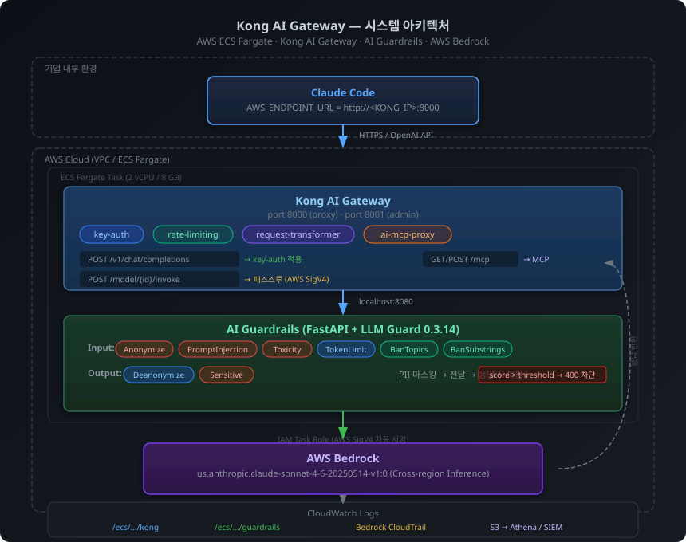
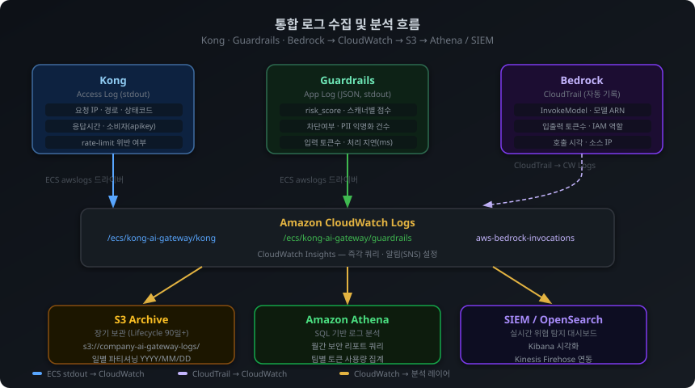

AWS Bedrock 기반 Kong AI Gateway + AI Guardrails 미들웨어를 활용한
다층 보안 LLM 인프라 설계 및 구현 프로젝트
기업이 Claude Code를 임직원에게 제공할 때, AI 보안 담당자가 마주하는 핵심 과제를 해결하기 위해 설계한 프로젝트입니다. 단순한 프록시 레이어가 아닌, 데이터 주권 · 접근 통제 · 실시간 위협 탐지 · 감사 추적을 모두 갖춘 엔터프라이즈 LLM 보안 인프라를 구현했습니다.
| 보안 과제 | 이 아키텍처의 해결 방식 |
|---|---|
| 코드·데이터가 외부로 나가는 것이 불안하다 | AWS Bedrock으로 VPC 내부에서만 처리 |
| 직원이 어떤 프롬프트를 넣는지 모른다 | Kong 중앙 게이트웨이에서 전수 감사 로그 |
| Jailbreak · 프롬프트 인젝션 공격을 막아야 한다 | LLM Guard ML 스캐너 실시간 탐지 및 차단 |
| 주민번호·카드번호 등 PII가 모델로 유출될 수 있다 | Microsoft Presidio Anonymize로 마스킹 후 전달 |
| 특정 부서/도구별로 접근을 제한해야 한다 | Kong key-auth + rate-limiting 정책 |
| MCP 도구 서버도 중앙에서 관리하고 싶다 | Kong AI MCP Proxy 통합 |
| 보안 사고 발생 시 로그가 파편화되어 있다 | CloudWatch 통합 + Athena/SIEM 연동 |

AWS_ENDPOINT_URL 환경변수 하나만 변경하면 Kong을 통해 Bedrock으로 라우팅됩니다.
개발자 도구(Claude Code) 자체는 수정 없이 보안 게이트웨이를 경유합니다.
Anthropic API를 직접 호출하면 프롬프트와 응답이 Anthropic의 미국 서버를 통과합니다. 금융·의료·공공 기관의 데이터 국외 이전 규제, 사내 코드·영업 전략이 담긴 프롬프트 등 기업 환경에서는 즉각적인 거부 사유가 됩니다. AWS Bedrock은 이 문제를 근본적으로 해결합니다.
프롬프트·응답이 AWS 계정 내부에서만 처리. VPC Endpoint 구성 시 인터넷 구간 완전 차단 가능.
API 키 대신 IAM Role 사용. 팀별 허용 모델 차별화, MFA Condition 추가 인증 가능.
ISO 27001, SOC 2 Type II, PCI-DSS Level 1, HIPAA, ISMS-P 등 AWS 인증을 자사 컴플라이언스에 활용.
리전 명시로 해당 리전 외 데이터 이동 없음. 국내 규제 환경에는 서울 리전 단일 모델 ARN 사용.
모든 InvokeModel 호출이 CloudTrail에 자동 기록. 누가 언제 어떤 모델을 호출했는지 추적 가능.
팀별 태그로 비용 분리. AWS Budget 알림으로 임계값 초과 시 자동 알림·차단.
| 항목 | Anthropic API 직접 호출 | AWS Bedrock |
|---|---|---|
| 데이터 경로 | 인터넷 → Anthropic 서버 (미국) | AWS VPC 내부 |
| 인증 방식 | API 키 (노출 위험) | IAM Role (자동 관리) |
| 감사 로그 | 없음 | CloudTrail 전수 기록 |
| 규정 준수 | 별도 검토 필요 | AWS 인증 상속 |
| 훈련 데이터 사용 | 옵트아웃 필요 | 계약 상 사용 불가 |
Docker Hub 기준 API 게이트웨이 중 가장 많은 다운로드 수.
Samsung, Expedia, Honeywell, NBCUniversal, Nasdaq 등 글로벌 레퍼런스.
API Management 부문 매년 Leader/Visionary 선정. Forrester Wave 상위권.
CNCF(Cloud Native Computing Foundation) 멤버 프로젝트.
| 기능 | 설명 |
|---|---|
| AI 전용 플러그인 | ai-proxy, ai-prompt-guard, ai-mcp-proxy, ai-semantic-cache 등 LLM 특화 플러그인 기본 제공 |
| OpenAI 호환 API | Claude Code를 포함한 모든 OpenAI SDK 클라이언트가 코드 수정 없이 연동 |
| DB-less GitOps | 단일 YAML 파일로 전체 정책 관리 → PR 리뷰 → 자동 배포로 보안 정책 변경 추적 |
| 200+ 플러그인 생태계 | key-auth, rate-limiting, ip-restriction, bot-detection, opentelemetry 등 즉시 확장 |
| 멀티 팀 라우팅 | 팀별 다른 모델·rate limit·허용 경로를 단일 게이트웨이에서 통합 관리 |
/v1/chat/completions 엔드포인트를 제공하므로
Claude Code에서 AWS_ENDPOINT_URL=http://<KONG_IP>:8000 환경변수 하나만 설정하면
보안 게이트웨이를 경유해 Bedrock으로 라우팅됩니다.
MCP(Model Context Protocol)는 Claude가 파일시스템·DB·API 등 외부 도구를 호출하는 표준 프로토콜입니다. 각 개발자가 MCP 서버를 직접 설정하면 감사 불가 · 접근 통제 불가 · 악성 서버 탐지 불가 등 보안 사각지대가 생깁니다. Kong을 MCP 게이트웨이로 사용하면 이를 해결합니다.
모든 MCP 도구 호출이 Kong 로그에 기록. 누가 어떤 도구를 언제 호출했는지 추적.
read_file은 허용, delete_file·execute_command는 차단. 코드로 정책 관리.
엔지니어링 팀은 DB 접근 허용, HR 팀은 파일시스템만 허용하는 ACL 정책.
# kong/kong.yaml — MCP 도구 화이트리스트 설정
plugins:
- name: ai-mcp-proxy
service: mcp-filesystem
config:
allowed_tools: # 허용 도구만 화이트리스트
- read_file
- list_directory
- search_files
blocked_tools: # 위험 도구 블랙리스트
- write_file
- delete_file
- execute_command
allowed_paths: # 접근 가능 경로 제한
- /workspace/projects
blocked_paths:
- /etc
- /var/secrets
| 비교 항목 | Bedrock 기본 Guardrails | 이 프로젝트 Guardrails |
|---|---|---|
| PII 감지 | 영어 중심, 패턴 매칭 | Presidio NLP + BERT NER (다국어 포함) |
| 프롬프트 인젝션 | 키워드 기반 제한적 탐지 | 전용 ML 모델 (DeBERTa 기반, 94% F1) |
| 정책 관리 | AWS 콘솔 UI 클릭 | 코드로 관리, Git 버전 추적 |
| 커스텀 확장 | AWS가 허용하는 범위 | 임의 스캐너 추가 가능 |
| 응답 후처리 | 없음 | 출력 PII 마스킹, 민감정보 재검사 |
| 추가 비용 | 요청당 과금 추가 | 컴퓨팅 비용만 |
| 단계 | 스캐너 | 탐지 대상 | 동작 |
|---|---|---|---|
| Input (프롬프트 입력 시) |
Anonymize | 이름, 이메일, 전화번호, 주민번호, 카드번호 | 마스킹 후 전달 |
| PromptInjection | "이전 지시 무시", Jailbreak 패턴 | score > 0.75 차단 | |
| Toxicity | 욕설, 혐오 발언, 위협적 언어 | score > 0.70 차단 | |
| TokenLimit | 입력 길이 초과 | 4096 토큰 초과 차단 | |
| BanTopics | 환경변수로 정의한 금지 주제 | score > 0.60 차단 | |
| BanSubstrings | 환경변수로 정의한 금지 문자열 | 포함 시 차단 | |
| Output (응답 반환 시) |
Deanonymize | 마스킹된 PII 복원 | [PERSON] → 원래 이름 복원 |
| Sensitive | 응답 내 비밀번호·토큰·키 | [REDACTED]로 대체 |
# ECS Task Definition 환경변수 설정으로 정책 변경 (재빌드 불필요) BAN_TOPICS=malware,hacking,drugs,weapon # 금지 주제 (쉼표 구분) BAN_SUBSTRINGS=ignore instructions,jailbreak # 금지 문자열 BLOCK_THRESHOLD=0.7 # 차단 임계값 (낮을수록 엄격) MAX_TOKENS_INPUT=2048 # 입력 토큰 제한

금융기업은 일반 기업 대비 훨씬 엄격한 규제 환경(금융보안원 가이드라인, 전자금융감독규정, 개인정보보호법, 신용정보법)에 놓여 있습니다. AI 코딩 도구 도입 시 보안 담당자가 반드시 검토해야 할 사항들을 기술 성숙도 변화와 함께 정리합니다.
| 고려 영역 | 구체적 요구사항 | 이 아키텍처의 대응 |
|---|---|---|
| 데이터 국외 이전 통제 | 금융고객 정보·내부 코드가 해외 서버로 전송되는 것을 차단해야 함. 신용정보법 제32조, 개인정보보호법 제28조의8 적용 | AWS Bedrock VPC Endpoint → 프롬프트가 AWS 계정 밖으로 이동하지 않음. Presidio로 PII를 마스킹한 뒤 전달 |
| 전자금융감독규정 준수 | 생성형 AI가 생성한 코드·문서가 업무에 사용될 경우 사람의 검토·승인 절차 요구. 자동화 단계 제한 | AI는 보조 도구로만 활용. 게이트웨이에서 모든 요청·응답 로깅 → 사후 감사 가능 |
| 내부정보 유출 방지 | M&A 정보, 금리 정책, 여신 심사 기준 등 MNPI(중요 미공개 정보)가 프롬프트에 포함될 위험 | BanTopics 스캐너로 금지 주제 실시간 차단. BanSubstrings로 내부 코드명·프로젝트명 필터링 |
| 접근 권한 최소화 | 직급·부서별로 AI 사용 범위 차별화. 고위험 업무(리스크 관리, 심사) 담당자는 더 엄격한 제어 필요 | Kong Consumer 그룹 + ACL 플러그인으로 팀별 rate limit·허용 모델 차별화 |
| 감사 추적 (Audit Trail) | 금감원 검사 시 "누가 AI에 무엇을 질문했는가"를 소명할 수 있어야 함. 최소 5년 보존 요구 | Kong 액세스 로그 + Guardrails 상세 로그 → CloudWatch → S3 장기 보관 + Athena 쿼리 |
| 모델 응답의 신뢰성 | AI가 잘못된 금융 규정·수치를 생성할 경우 법적 리스크 발생 (Hallucination 위험) | 현재 아키텍처에서 미해결 — 별도의 RAG 또는 사실 검증 레이어 추가 필요 |
| 미해결 과제 | 현재 상태 및 한계 | 잠재적 리스크 | |
|---|---|---|---|
| 미흡 | Hallucination(환각) 탐지 | 모델이 존재하지 않는 금융 규정, 잘못된 수치를 자신 있게 생성해도 현재 아키텍처는 이를 탐지할 수단이 없음 | 금융 업무 활용 시 잘못된 정보가 의사결정에 반영될 위험. RAG + 사실 검증 레이어 필요 |
| 미흡 | 한국어 특화 PII 정밀도 | BERT 다국어 모델이 한국어 PII를 처리하나, 금융 도메인 특화 학습이 없어 "홍길동 계좌" 같은 문맥 의존 PII는 탐지율이 낮음 | 금융고객 정보가 마스킹 없이 모델로 전달될 가능성. 금융 도메인 파인튜닝된 NER 모델 필요 |
| 미흡 | AI 생성 코드 보안 검증 | Claude Code가 생성한 코드가 보안 취약점(SQL Injection, 하드코딩 시크릿 등)을 포함할 수 있으나 응답 단계에서 코드 취약점 분석은 현재 미구현 | 취약한 코드가 리뷰 없이 배포될 경우 금융 시스템 침해 경로가 될 수 있음 |
| 부분 | 실시간 행위 분석 (UEBA) | 로그는 수집되나 개별 사용자의 행위 패턴(평소 대비 이상 질의 패턴)을 자동으로 분석하는 UEBA 연동이 미구현 | 점진적인 정보 탈취(slow exfiltration) 시도를 룰 기반 알림만으로는 탐지하기 어려움 |
| 부분 | 모델 응답 법적 책임 귀속 | AI가 생성한 금융 조언·코드에 대한 법적 책임이 사용자인지 기업인지 불명확. 현재 국내 법 해석 미정립 | 금융 소비자보호법, 자본시장법 위반 가능성. 면책 조항 및 사용 가이드라인 정책 수립 필요 |
내부 금융 규정집·상품 약관을 벡터 DB에 색인하고, 모델 응답을 실제 문서와 대조하는 Hallucination 검증 파이프라인 도입. 금융 업무 활용의 핵심 전제 조건.
금융보안원·금융결제원 가이드라인에 맞는 한국어 금융 PII(계좌번호, 증권번호, 보험번호 등)를 정밀 탐지하는 파인튜닝 모델 개발 또는 도입 검토.
사용자별 AI 질의 패턴을 학습해 평소와 다른 민감 정보 접근 시도를 자동 탐지. CloudWatch Logs를 Amazon Security Lake → SIEM UEBA 엔진과 연동.
Claude Code 응답으로 생성된 코드를 SAST 도구(Semgrep, Bandit)와 연동해 취약점을 자동 탐지하고 위험 코드 패턴 포함 시 경고 또는 차단.
금융보안원의 AI 활용 보안 가이드라인(2024)에 따른 내부 정책 수립. 허용 업무 범위, 출력물 검토 의무, 사고 시 책임 귀속 등 운영 규정 문서화.
금융기관 망분리 규정(전자금융감독규정 제15조)에서 인터넷망 AI 도구 사용은 원칙적으로 금지. AWS GovCloud 또는 온프레미스 LLM 서버 구성으로 내부망 전용 AI 환경 구축 검토 필요.
| 검증 항목 | 결과 | 비고 |
|---|---|---|
| ECS Fargate 배포 | HEALTHY | Kong + Guardrails 양 컨테이너 health check 통과 |
| 정상 Claude Code 요청 | 200 OK | OpenAI 형식으로 Bedrock Claude Sonnet 4.6 응답 수신 |
| Jailbreak 프롬프트 차단 | 400 차단 | PromptInjection 스캐너 score 0.94, 한국어 메시지 반환 |
| Rate Limiting | 동작 | 응답 헤더에 X-RateLimit-Remaining 포함 확인 |
| Bedrock 경로 (AWS SDK) | 200 OK | /model/{id}/invoke 경로, API 키 불필요 (IAM 인증) |
| CloudWatch 로그 수집 | 정상 | Kong, Guardrails 각 로그 그룹에 실시간 수집 |